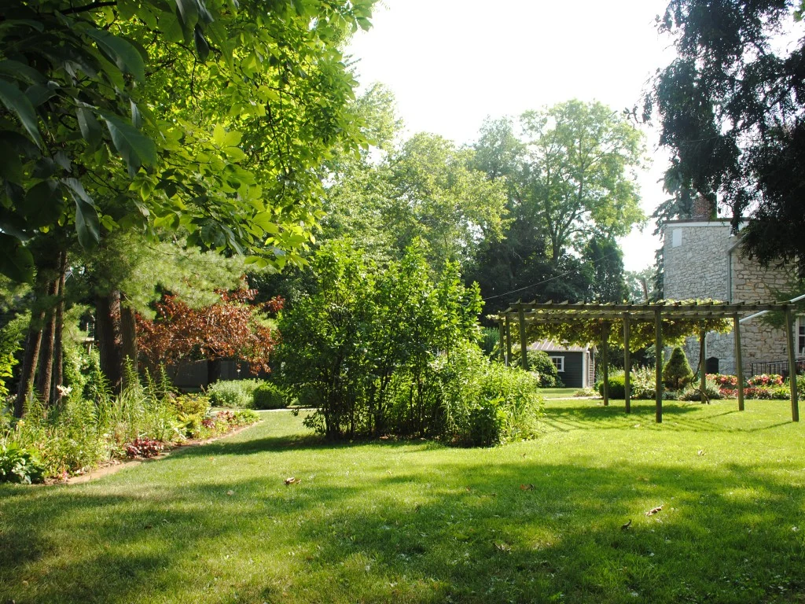
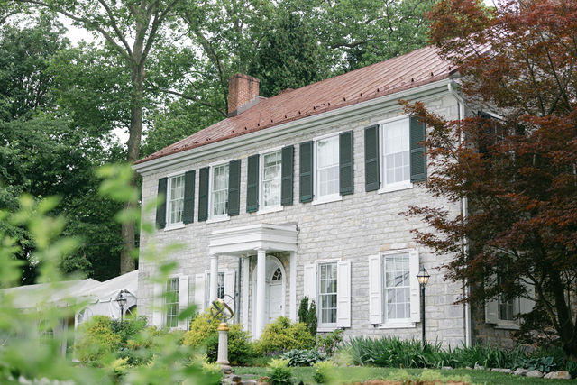
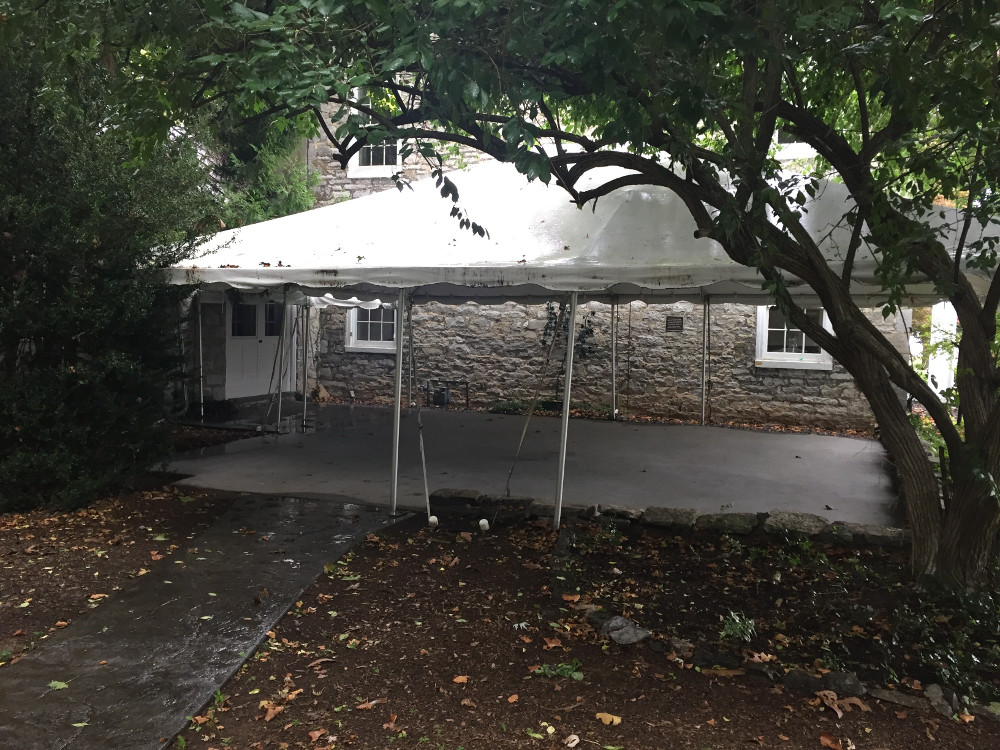
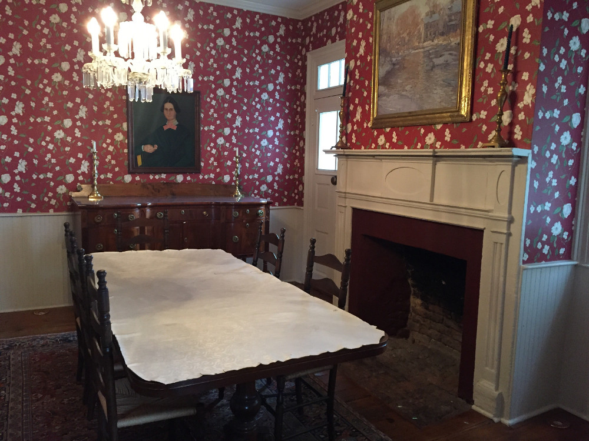

CCHSThe garden
Green views and mature trees.
The garden brings a quieter landscape alongside the house. It is a useful place to begin imagining the setting—and to ask how the outdoor areas can be used.
The venue · Carlisle, Pennsylvania
Look beyond the wedding portraits. The historic house, garden views and wooded grounds are part of what gives this place its character.

Justace Faith PhotoA historic house
Two Mile House was constructed in 1820. Its stone exterior and period rooms are part of the house’s character.
When considering a rental, ask which rooms and spaces are available for your plans, and how they may be used.
Understand the rentalAround the house
Explore the grounds and the spaces beside the house. Confirm the permitted use of each area when discussing your event.

CCHSThe garden
The garden brings a quieter landscape alongside the house. It is a useful place to begin imagining the setting—and to ask how the outdoor areas can be used.

CCHSPatios are part of the property. Ask about their current layouts, access and weather arrangements for the event you have in mind.

CCHSPeriod rooms add another view of the property’s character. Confirm room access and permitted uses in the current rental agreement.
From setting to plans
Your guest estimate, preferred layout and guests’ access needs help frame the conversation. Confirm permitted configurations, rental access and weather arrangements before committing to a plan.
Review the rental questions1820
A historic CCHS property
Two Mile House is a historic property of Cumberland County Historical Society. Its place in local history is part of the setting you see here.